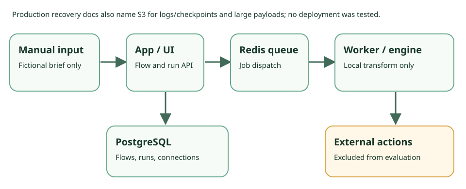

Document and source audit · 27 Sep 2026
Activepieces CE: execution, credentials, and recovery boundaries.
Community Edition can run a reviewed internal drafting flow for a team that operates its own infrastructure. It does not supply a marketing system of record, consent policy, CE-enforced two-person approval, or exactly-once external actions.
Decision
Use CE as an executor, not as the approval boundary.
A technical operator can use a manual flow to produce an internal draft and inspect a run record. Before connecting real services, that operator must own secrets, egress, retries, monitoring, retention, backups, and target-system correction.
- Best fit
- A technical solo builder, consultant, or marketing-ops team with infrastructure help and a named flow owner.
- Not for
- Unattended sending, publishing, CRM writes, or paid media based on documentation alone; an organization relying on CE for granular RBAC, audit logs, or two-person publication approval.
- First evaluation
- Fictional brief → Manual Trigger → local transform → internal Markdown calendar → named human review. Proposed only; not performed.
Where a run goes

| Surface | Documented boundary | Operator consequence |
|---|---|---|
| License and edition | The root license covers content outside named EE paths under MIT Expat, subject to third-party licenses. The EE license requires a commercial agreement for production use. | Check the 0.92.0 tag files and each selected piece before treating it as CE/MIT. A visible repository is not a license for EE. |
| Build and test | Flows have triggers and actions; Manual Trigger is marked MIT/every plan. Step testing executes the step; it is not a dry-run guarantee. | Keep the first flow to local code/transform. Stop if the selected 0.92.0 UI cannot accept the fictional manual input as proposed. |
| Execution and record | Workers poll Redis/BullMQ and execute in an engine. Runs show step input/output and status; checkpoints record progress. | A record helps investigation but is not a CE audit log, approval, or proof that an external target did or did not mutate. |
| Retry | Finished steps are skipped on replay; an interrupted in-flight step can re-run. Failed-step retry requeues a run. Durable execution | Design target-side idempotency and compensation before any external write. A target may accept a write before the checkpoint. |
| Credentials | Connections hold third-party accounts. AP_ENCRYPTION_KEY protects stored Connections; losing it makes them unreadable even with a database backup. Environment reference | Back up and restore key material separately from PostgreSQL. The fictional local flow creates no Connection. |
| Governance | Flow Approvals are Enterprise/Cloud with Environments; RBAC and audit logs are marked paid. | A person reviewing output or deciding to click Publish is an operator process, not CE-enforced four-eyes approval. |
External actions need separate permission
The proposed evaluation has no LLM, HTTP, email, social, CRM, public webhook, or paid-media node. A later action may need a Connection/token, egress route, API scope, consent or suppression check, cost approval, rate limit, and a target-side correction plan. Even an unauthenticated HTTP endpoint can mutate data. A step test can send or post if the step contacts a service. The checked CE material does not establish a platform-wide no-send switch, target idempotency, spend cap, or rollback.
Public triggers are a further boundary. A webhook needs a reachable URL, ingress authentication, privacy and replay controls. The recovery guide warns an async webhook may receive HTTP 200 after Redis enqueue but before a PostgreSQL run row exists; Redis loss in that interval can lose an accepted request without a trace. Do not expose a webhook in the first evaluation.
What self-hosting makes you operate
- Deployment: the Compose guide specifies Compose v2, at least 2 vCPU/4 GB, and app, worker, PostgreSQL, and Redis containers. Verify nonblank
AP_ENCRYPTION_KEY,AP_JWT_SECRET, and PostgreSQL password; the first account becomes administrator. Pin and inspect the selected image/source. - Isolation: the current environment reference lists
UNSANDBOXEDexecution andUNRESTRICTEDnetwork as defaults. Self-hosting alone is not a sandbox or egress policy. - Recovery: PostgreSQL contains flows, runs, and Connections; the current production recovery guide also calls S3 a system of record for logs/checkpoints and large payloads. The Compose
postgres_datavolume is outside the project folder. Restore PostgreSQL, any configured object store, and encryption key material together. Redis persistence and queue-loss response also need a plan. - Rollback: the application rollback guide covers image/database reversal. It cannot unsend mail, unpublish a post, refund a provider call, or reverse a CRM write.
- Monitoring: use worker, queue, container, database, object-store, certificate, and failed-job signals with an on-call owner. The 0.92.0 notes mention
job.failedlogging and retry/log fixes; a release note is not proof that an instance alerts or recovers.
Retention: documented numbers, conflicting pages
The current unversioned Limits page states a self-host default of AP_EXECUTION_DATA_RETENTION_DAYS=30 and a 50 MB run-log cap, with 2 KB input truncation and 32 KB output slicing thresholds. The Truncated Logs page still says 25 MB and describes truncation differently. These are documentation claims, not measurements for 0.92.0 or any deployment. Verify installed flags, actual deletion, backups, and privacy policy. The 24 Sep pilot guide recorded the duration as unknown in the material checked then; this audit updates that source finding without claiming the conflict is resolved.
Proposed isolated evaluation—not an executed test
- Pin an inspected CE image/source on a private disposable instance. Use only a fictional product, audience, and date. Generate disposable local secrets; no production key or real contact.
- Use Manual Trigger and one local transform step to format a three-item Markdown calendar. Create no Connection or external node. If the manual route cannot take the fictional brief, stop rather than substituting a webhook, app trigger, or LLM.
- Inspect the run output and, if possible, one harmless deterministic failure record. A named human reviews the draft and confirms the flow contains no external action. This review is an operator policy.
- Record version/digest, operator, reviewer, flow structure, run IDs, and key locations. Delete the flow and run data, purge the disposable database/volume and secret file, and verify teardown. This does not establish production deletion or restore.
Before a real flow, independently verify connector license and scopes, consent and suppression, egress, cost, target idempotency, approval ownership, monitoring, retention, patch state, and a tested restore/incident exercise.
Still unverified
The 0.92.0 tag-license comparison; exact CE UI and feature availability; selected piece license and target permissions; retention behavior amid conflicting docs; hostile-input masking and encryption; PostgreSQL/S3/key restore; Redis persistence and lost-job response; alert delivery; hard deletion from backups; target authorization, idempotency, compensation, and production security state. Missing evidence here is not proof of missing product functionality.